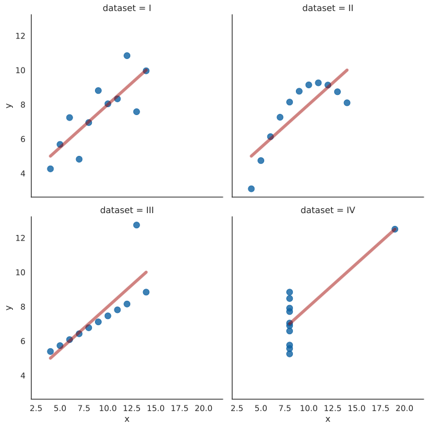

1. Importance of data visualization#
Before we dive into visualizing domain-specific data (e.g., food data), we must start with the bare fundamentals. To demonstrate the importance of visualization for data interpretation we can use a collection of four datasets known as Anscombe’s quartet (after the English statistician Francis Anscombe). Those datasets comprise 11 data points with particular properties: while the points themselves differ between the sets, their summary statistics are (nearly) exactly the same, i.e.: all those datasets have the same mean, standard deviation and regression line with the same parameters and R2 metric. And yet, the shape of the data differs widely between those, as we will see below. This demonstrates beautifully why data visualization is essential to fully comprehend any analysis, as a complement to statistical and numerical methods.
1.1. Environment setup#
Here we will import all the required modules and preconfigure some variables, if necessary.
import seaborn as sns
from scipy import stats
%config InlineBackend.figure_format='svg'
%matplotlib inline
1.2. Load the dataset and analyze it#
The seaborn library provides a method to read in this dataset directly:
quartet = sns.load_dataset("anscombe")
quartet.head() # display the first five records
| dataset | x | y | |
|---|---|---|---|
| 0 | I | 10.0 | 8.04 |
| 1 | I | 8.0 | 6.95 |
| 2 | I | 13.0 | 7.58 |
| 3 | I | 9.0 | 8.81 |
| 4 | I | 11.0 | 8.33 |
We can now explore the summary metrics of the data. Let’s look at the mean, standard deviation, and linear regression calculations. To achieve this, we can use pandas’ groupby method, which allows us to “group” the data points according to the indicated variable - in our case, “dataset”. We can then use the resulting object to calculate some summary statistics on all the groups.
quartet_grouped = quartet.groupby('dataset')
quartet_grouped.mean()
| x | y | |
|---|---|---|
| dataset | ||
| I | 9.0 | 7.500909 |
| II | 9.0 | 7.500909 |
| III | 9.0 | 7.500000 |
| IV | 9.0 | 7.500909 |
quartet_grouped.std()
| x | y | |
|---|---|---|
| dataset | ||
| I | 3.316625 | 2.031568 |
| II | 3.316625 | 2.031657 |
| III | 3.316625 | 2.030424 |
| IV | 3.316625 | 2.030579 |
# fit a linear regression model for each dataset
for ds in quartet['dataset'].unique():
dataset = quartet[quartet['dataset'] == ds]
res = stats.linregress(dataset['x'], dataset['y'])
print(
f'Dataset {ds}:'
f'\ty={round(res.slope, 3)}x+{round(res.intercept, 3)}'
f'\tR-coeff={round(res.rvalue**2, 3)}'
f'\tCorrelation-coeff={round(res.rvalue, 3)}'
)
Dataset I: y=0.5x+3.0 R-coeff=0.667 Correlation-coeff=0.816
Dataset II: y=0.5x+3.001 R-coeff=0.666 Correlation-coeff=0.816
Dataset III: y=0.5x+3.002 R-coeff=0.666 Correlation-coeff=0.816
Dataset IV: y=0.5x+3.002 R-coeff=0.667 Correlation-coeff=0.817
As you can see, the numbers are nearly identical. Without visualizing the data it would be rather difficult to tell the datasets apart.
Let’s try to look at the data using a scatter plot, including a regression line (automatically calculated by the lmplot function):
with sns.plotting_context("notebook", font_scale=1.2), sns.axes_style('white'):
g = sns.lmplot(
x="x", y="y", col="dataset", data=quartet, ci=None,
col_wrap=2, scatter_kws={"s": 100, 'color': '#0D62A3'},
line_kws={'linewidth': 5, 'color': '#A30905', 'alpha': 0.5},
)
g.set(xlim=(2, 22))

Now, that is interesting. Each of those looks entirely differently - let’s think about how we could interpret each of those datasets after visual inspection:
resembles a typical linear relationship where the y variable is correlated with x (with a lot of Gaussian noise)
there is a clear correlation between variables but not a linear one
the relationship is evidently linear, with a single outlier (which is lowering the correlation coefficient from 1 to 0.816)
there does not seem to be a relationship between the two variables, however the outlier again skews the correlation coefficient significantly
As you can see, according to the linear regression model parameters themselves those datasets look very similar, if not the same. It is only when we visualize them using a simple scatter plot we can see that those datasets differ significantly.
Remember
Data visualization allows us to get the first glimpse into the properties of the dataset, without the need to calculate many different summary statistics and other metrics.
In the next sections, we will explore different visualization methods that will help us in the analysis of different datasets.